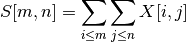

Module: transform.integral¶
| skimage.transform.integral.integral_image(x) | Integral image / summed area table. |
| skimage.transform.integral.integrate(ii, r0, ...) | Use an integral image to integrate over a given window. |
integral_image¶
- skimage.transform.integral.integral_image(x)¶
Integral image / summed area table.
The integral image contains the sum of all elements above and to the left of it, i.e.:

Parameters : x : ndarray
Input image.
Returns : S : ndarray
Integral image / summed area table.
References
[R160] F.C. Crow, “Summed-area tables for texture mapping,” ACM SIGGRAPH Computer Graphics, vol. 18, 1984, pp. 207-212.
integrate¶
- skimage.transform.integral.integrate(ii, r0, c0, r1, c1)¶
Use an integral image to integrate over a given window.
Parameters : ii : ndarray
Integral image.
r0, c0 : int
Top-left corner of block to be summed.
r1, c1 : int
Bottom-right corner of block to be summed.
Returns : S : int
Integral (sum) over the given window.